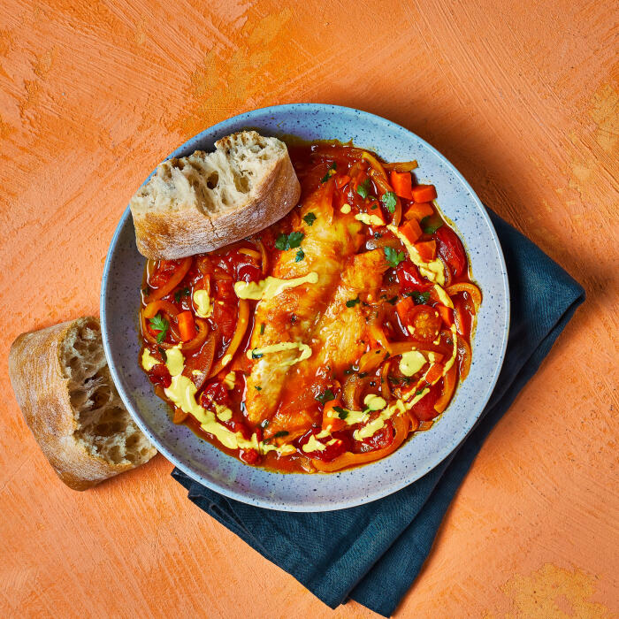

Mediterranean Fish Stew with Sunny Aioli

Description
Indulge in this delicious stew made with poached fish in a tomato and
pepper sauce, straight from the Mediterranean. Accompanied with a generous
serving of homemade sunny aioli and warm ciabatta.
Ingredients
For 2 people
- 1 tsp turmeric
- 1 garlic clove
- 1 yellow pepper
- 10g parsley
- 11g vegetable stock mix
- 2 ciabattas
- 30ml mayonnaise
- 32g tomato paste
- 15ml white wine vinegar
- 1 carrot
- 1 star anise
- 2 x 150g fish fillets
- 125g cherry tomatoes
- 1 brown onion
- You'll also need: butter, olive oil, pepper, sugar, salt
Cooking Steps
-
Preheat the oven to 180°C/ 160°C (fan)/ gas 4. Chop the cherry tomatoes
in half. Peel and finely slice the brown onion[s]. Deseed the yellow
pepper[s] (scrape the seeds and pith out with a teaspoon) and cut into
thin strips. Top, tail, peel and dice the carrot[s] and peel and finely
chop the garlic.
-
Heat a large, wide-based pan (preferably non-stick with a matching lid)
with a drizzle of olive oil and 10g [20g] butter over a medium heat.
Once hot, add the sliced onion, diced carrot, chopped tomatoes, sliced
pepper and half the garlic (save the rest for later!) with a pinch of
salt and sugar. Add the star anise and cook for 8-10 min, or until the
onion has started to soften and the tomatoes have broken down.
Meanwhile, boil a kettle.
-
While the vegetables are cooking, combine the vegetable stock mix and
half of the ground turmeric (save the rest for later!) with 350ml
[600ml] boiled water – this is your turmeric stock. Once the vegetables
have softened, add the tomato paste and cook for 1 min, stirring
continuously. Add the turmeric stock and bring to the boil over a high
heat, once boiling, reduce the heat to low and cook for 5-6 min or until
reduced by half.
-
Meanwhile, combine the remaining ground turmeric with 1 tsp [2 tsp]
boiled water and stir until you have a smooth paste. Add the mayo,
remaining chopped garlic and white wine vinegar. Whisk in a drizzle of
olive oil with a pinch of black pepper – this is your sunny aioli.
-
Add the ciabattas to a baking tray, drizzle them with a little olive oil
and put the tray in the oven for 8-10 min, or until they're hot and
crusty.
-
Pat the fish fillets dry with kitchen paper. Gently add the fish to the
pan and cook, covered, for 3-4 min or until the fish is cooked through.
Tip: Your fish is cooked when it turns opaque and flakes easily.
-
While the fish is cooking, chop the parsley finely, including the
stalks. Stir most of the chopped parsley (save the rest for garnish!)
carefully through the cooked stew – this is your Mediterranean fish
stew. Serve the stew with the hot ciabatta to the side.
-
Garnish with the remaining chopped parsley and drizzle over the sunny
aioli. Tip: Don't forget to remove the star anise!
- Enjoy!